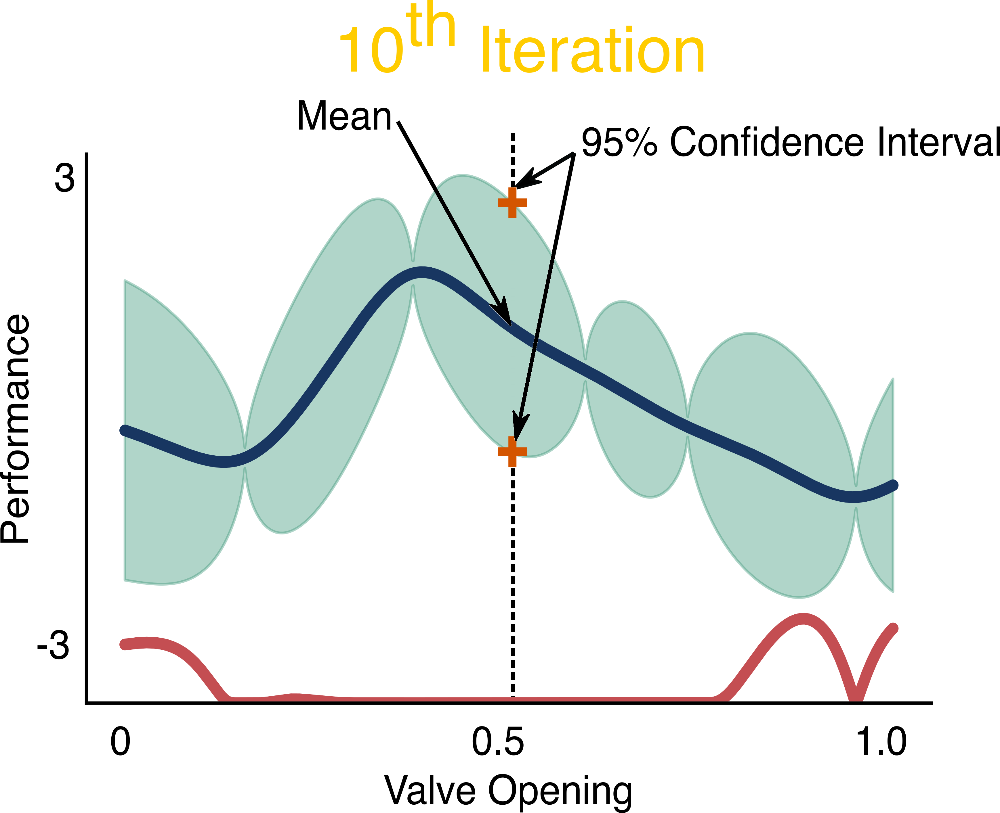
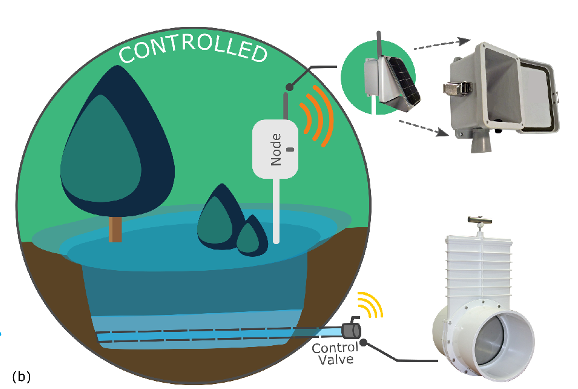
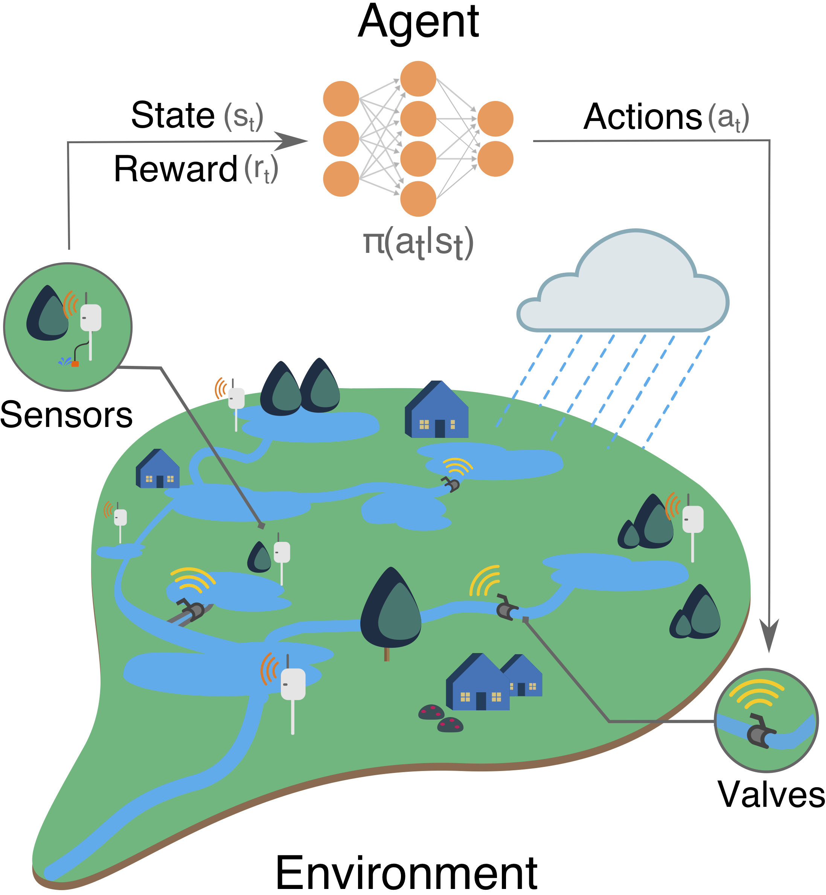
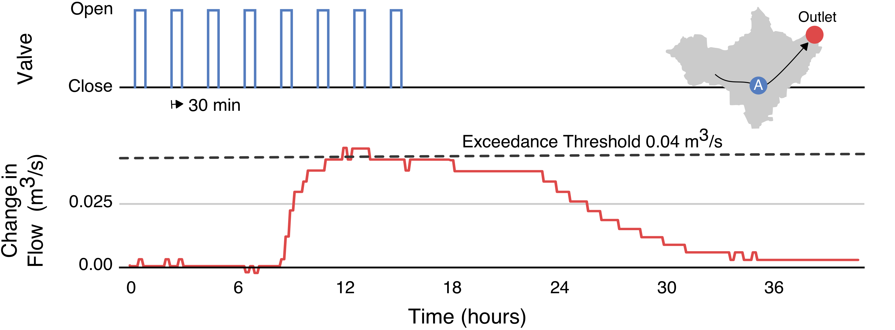
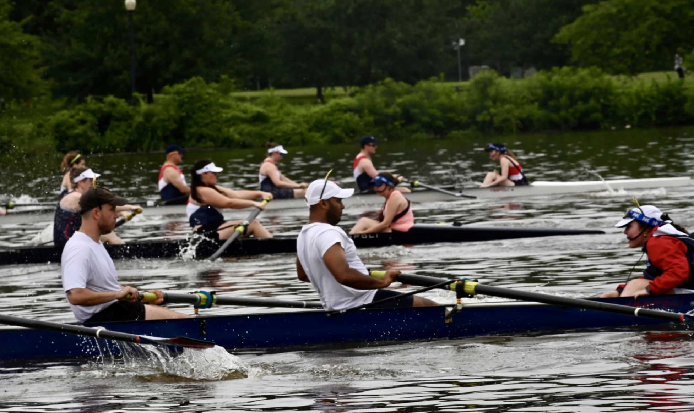
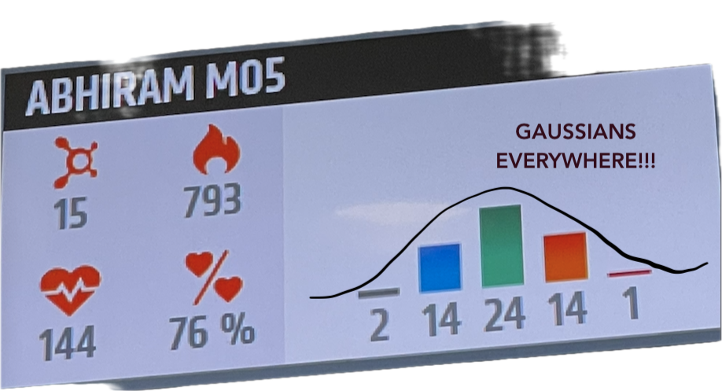
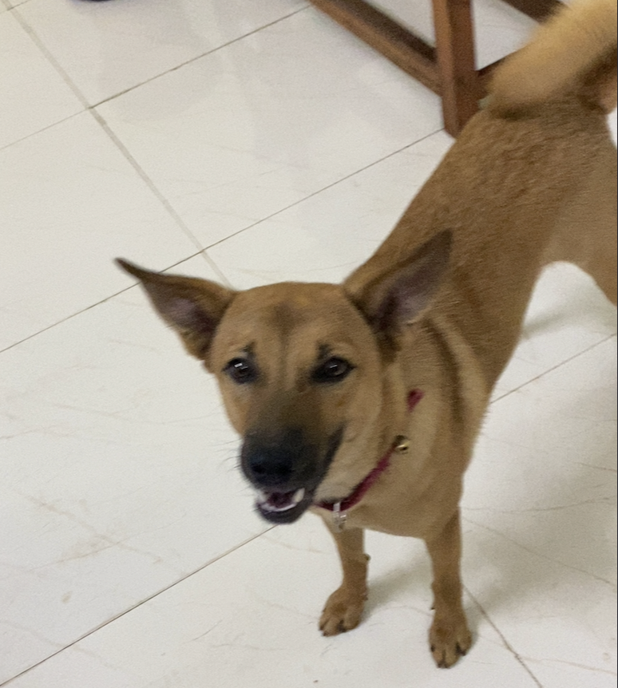

Abhiram Mullapudi
I build digital water systems that integrate machine learning, wireless sensor networks, and physical modeling to improve the resilience of urban water infrastructure. I am currently working at Inframark as a Lead Data Scientist, where I develop scalable machine learning solutions for small and medium-sized water utilities. My interests lie in signal processing, probabilistic methods, and optimization for cyber-physical infrastructure systems. I have a PhD in Civil Engineering from the University of Michigan, Ann Arbor, specializing in intelligent infrastructure systems. I write about some of these at randomstorms.substack.com. I am based in Washington, DC 🌸. During my free time, I row with the amazing crew at Capital Rowing Club and try to get my heart rate into a Gaussian distribution.
Small things I'm tinkering with right now, updated as they evolve.
Inframark
Leading the development of machine learning-based solutions for optimizing the operation of collection systems and wastewater treatment plants.
Xylem
Designed and implemented end-to-end machine learning-based solutions that inform decision-making in urban water infrastructure systems. Led the development of statistical and machine learning-based methodologies for time-series filtering and anomaly detection for predictive maintenance and operational decision-making. Developed a Flyte-based MLOps platform to streamline end-to-end machine learning model development, deployment, and maintenance for Xylem's digital water products.
Xylem
Pioneered advanced machine learning and data engineering solutions for urban water infrastructure, transforming raw sensor data into actionable intelligence that optimizes water network performance, predicts critical operational challenges, and enables data-driven decision-making for utilities and municipalities. Developed a 1D-CNN model that leverages NOAA rainfall forecasts and near-real-time flow measurements to accurately predict 24-hour inflow to water treatment plants. Engineered an advanced 1D-CNN interpolation framework for processing spatially distributed river level data, enabling comprehensive environmental monitoring and regulatory compliance reporting. Designed a high-performance real-time processing system leveraging symbolic programming and advanced statistical techniques to detect network irregularities across 600+ concurrent data streams. Created machine learning-powered visualization platforms that translate complex water network dynamics into intuitive, actionable insights, including predictive treatment plant inflow dashboards and public-facing Combined Sewer Overflow event tracking.
Simulation sandbox for designing and evaluating stormwater control algorithms. Curated scenarios for benchmarking.
PythonThe Python interface to EPA's Stormwater Management Model. Enables real-time interaction with SWMM simulations.
PythonRobust Random Cut Forest for anomaly detection on streaming data. Detects shifts in data structure in real time.
PythonOpen-source package for integrated modeling of water quality and water balance in EPA-SWMM simulations.
PythonWorkshop materials for building digital twins of water systems. Covers mechanistic modeling, sensor data integration, and Python workflows.
Jupyter NotebookImplementation of physically-based recursive digital filtering for hydrograph separation into baseflow and quickflow components.
Jupyter NotebookNative macOS PDF reader with an integrated local LLM chatbot. Ask questions about your documents without leaving the app.
Swift



Sensors, 2018
Precisely shaping stormwater network response using wireless sensor network data.
Reflections on LLM tooling, productivity, and building a PDF reader with a local LLM.
A numpy implementation of SINDy — sparse identification of nonlinear dynamical systems.
On double descent, over-parameterization, and why bigger models can generalize better.
An introduction to building digital water systems with Python and mechanistic modeling.
Why open-source tools are key to making digital water technologies accessible and equitable.

I row with the amazing crew at Capital Rowing Club on the Anacostia River. Nothing motivates you to reduce CSOs more than rowing past them every other day.

I love trying to make a Gaussian distribution with my heart rate zones in HIITs :P
